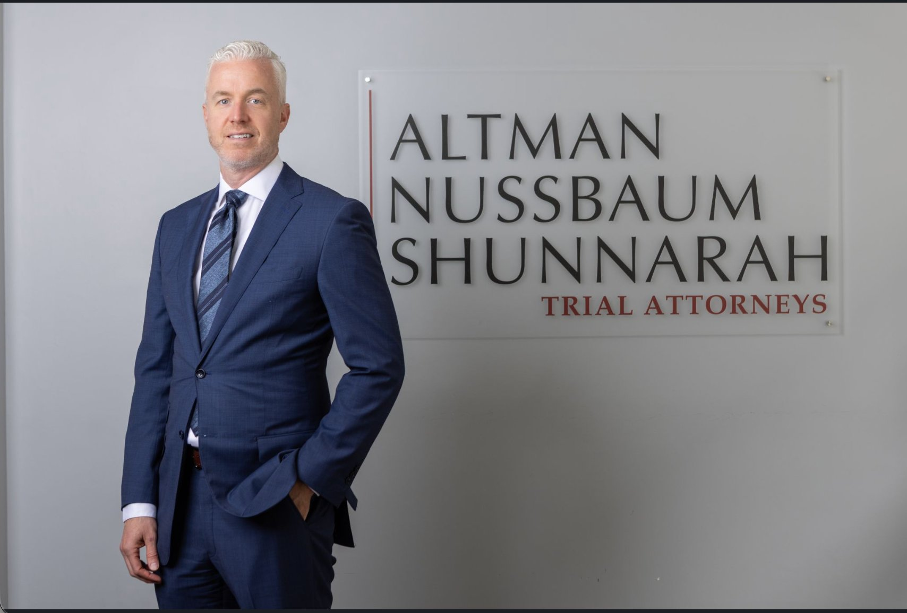

You pay nothing unless we recover compensation for you. Our contingency fee model means we're fully invested in your outcome.
You'll work directly with Tom — not passed off to paralegals. Your case gets the care and attention it deserves.
Millions recovered for injured clients across Massachusetts. Tom has the experience to negotiate firmly and litigate fearlessly.
Your first meeting costs nothing. Tom will review your case, answer your questions, and tell you honestly what he can do for you.
Since his admission to the Massachusetts and New Hampshire bars, Tom Flaws has focused his entire career on representing seriously injured people.
Tom has fought tirelessly against America's largest corporations, insurance companies, and law firms to achieve outstanding results for his clients. Today, his sole focus is on high-stakes, high-value cases — including car crashes, trucking wrecks, construction site accidents, product liability, premises liability, and negligent security cases.
In 2021, Tom joined Altman Nussbaum Shunnarah, and since that time has resolved some of the largest personal injury cases in Massachusetts history.
Tom is based in Greater Boston and handles cases throughout Massachusetts, New Hampshire, and New England. He has been admitted pro hac vice — a court procedure that allows an out-of-state attorney to appear in a jurisdiction where he is not licensed — in other states, and continues to do so for the right cases. Tom selectively handles catastrophic injury matters around the country.
Tom and Altman Nussbaum Shunnarah welcome referrals from other attorneys. The firm has the resources of a large national practice, and frequently joins forces with smaller firms on catastrophic and complex cases — bringing investigative depth, expert networks, and litigation firepower that benefit clients and co-counsel alike. If you have a serious case and want to discuss whether it's a fit, Tom welcomes that call.
Tom is frequently sought out by media outlets for commentary on legal matters and high-profile cases. He has appeared on NBC Boston, WBZ (CBS Boston), WCVB-TV (ABC Boston), Boston 25 (Fox), WGN Chicago, NPR/WBUR, the Boston Globe, and in Massachusetts Lawyers Weekly.
Tom is also deeply committed to the legal community. He has served as a Director-at-Large at the Massachusetts Bar Association Young Lawyers Division and as a Student Mentor at New England School of Law.
Car accidents, truck accidents, motorcycle crashes, pedestrian knockdowns, and bicycle accidents. Tom handles the insurance companies so you can focus on healing.
Commercial truck crashes involve complex federal regulations and powerful corporate defendants. Tom has the experience to go up against trucking companies and win.
Falls from scaffolding, equipment malfunctions, struck-by incidents, and unsafe worksites. Tom understands OSHA standards and knows how to prove negligence.
Slip and falls, stairway accidents, and unsafe property conditions. Property owners have a duty — Tom enforces it.
Defective products, dangerous equipment, and manufacturing failures. Tom holds manufacturers responsible for the harm their products cause.
Assaults that occur because a property owner failed to provide adequate security. You deserve to be safe — and compensation when that safety is ignored.
Survivors of sexual assault may have civil claims against the perpetrator, institutions, employers, and property owners whose negligence enabled the assault. Tom handles these cases with complete discretion and sensitivity.
Uber, Lyft, and other rideshare companies carry substantial insurance, but their claims process is complicated by design. Tom knows how to navigate it and recover full compensation.
Crosswalk and sidewalk injuries caused by negligent drivers or poorly maintained public ways. Tom pursues full accountability on your behalf.
Under M.G.L. c. 93A and c. 176D, insurance companies must investigate claims promptly and make fair settlement offers. When they don't, they may be liable for double or triple damages plus attorney's fees.
When negligence takes a life, surviving family members may have a wrongful death claim. Tom handles these cases with the seriousness and compassion they deserve.
Tap any result to read more about the case.
A woman visiting her daughter in Massachusetts entered a rented home through a side door that swung inward — the opposite of what the original building permit required. Carrying her granddaughter's bicycle, she had to reach back to close the door and fell down the stairway. She was rendered quadriplegic. Tom demonstrated that the property had been altered without a permit and no longer complied with Massachusetts building and sanitary codes. The case resolved for the full amount of available insurance.
A 68-year-old man was in Boston celebrating his daughter's engagement when he was attacked outside a bar. The assailant grabbed him by his hood and pulled him to the ground, causing a broken neck requiring fusion. The defendant's homeowner's insurer denied coverage. Tom took an assignment of rights from the defendant, obtained a default judgment in Suffolk Superior Court, then pursued the insurer directly under M.G.L. c. 93A and c. 176D for bad faith. The case settled at mediation for the exact amount of the judgment plus interest.
A 20-year-old college student was helping his family on a landscaping job in Belmont when a sun-blinded driver came up from behind, cut the wheel left, and pinned him against the landscape truck. He suffered a traumatic amputation of his left leg between the knee and hip. Despite the catastrophic injury, the young man planned to return to college. The case resolved at mediation.
A woman was struck on the passenger side of her vehicle by a driver who ran a red light, having been cited by police for operator error and determined to be an imminent threat. The collision caused two catastrophic, cascading injuries — a cervical disc injury that required two surgeries including a discectomy and fusion, and a knee injury caused in part by weakness from the neck injury, which ultimately required a total knee replacement. The surgeries spanned nearly five years following the crash.
The defendant's insurer made no offer of settlement despite holding all medical records demonstrating clear liability and causation. Tom sent a demand pursuant to M.G.L. c. 93A and c. 176D, placing the insurer on notice that its complete failure to respond constituted bad faith. The case resolved for $750,000. Per the demand, the insurer was not named on the release.
Past results do not guarantee future outcomes. Each case is unique and results depend on the specific facts and circumstances involved. Attorney advertising.
Being seriously injured is one of the most disorienting experiences a person can go through. In the days that follow, it can be hard to know what to do, who to trust, or even where to begin. The most important thing to understand is this: you don't have to figure it all out at once. Focus on your health. Tom will handle the rest.
Whatever happened, getting checked out by a doctor is the right thing to do — for your health, and for your peace of mind. Many serious injuries, including spinal injuries, traumatic brain injuries, and internal damage, don't announce themselves right away. Symptoms can appear days later. A prompt medical evaluation tells you what you're dealing with and makes sure nothing serious goes unaddressed.
If you are able, take photographs of the scene, any hazardous conditions, and your injuries. Get the names and contact information of anyone who witnessed what happened. If law enforcement responds, make sure a report is filed. Write down what you remember while the details are still clear — memory is surprisingly unreliable, and the small things often matter more than you'd expect.
It's natural to want to explain yourself or be cooperative in the aftermath of an injury. But insurance adjusters — even friendly ones — are professionals whose job is to resolve claims for as little as possible. If someone from an insurance company asks for a recorded statement, it's worth talking to a lawyer first. You're not required to give one, and a brief conversation with Tom costs you nothing.
The earlier Tom gets involved, the better he can protect your interests. Evidence gets lost. Surveillance footage is overwritten. Witnesses move on. When Tom is engaged early, he can investigate while the facts are fresh — identifying every responsible party, securing critical evidence, and building the strongest possible foundation for your case.
Just as importantly, early involvement means you can put the legal side of this entirely out of your mind. Tom handles the insurance companies, the paperwork, and the investigation. Your only job is getting better.
Social media is a normal part of life, but it's worth being thoughtful in the period following a serious injury. Posts about your activities, your health, or the incident itself can be taken out of context in ways that are genuinely harmful to your case. When in doubt, it's better to wait.
Hold onto your medical bills, records, and any out-of-pocket expenses. If you're missing work, keep a record of it. Consider keeping a simple journal about how you're feeling day to day — your pain levels, what you can't do, how your life has changed. These details matter, and they're easy to forget over time.
A note on timing: There is never any cost to speaking with Tom — consultations are always free, and there is no fee unless he recovers for you. If you're unsure whether you even have a case, that's exactly the kind of conversation he's glad to have.
Tom offers free, no-obligation consultations. There is no fee unless he recovers for you. Reach out by phone or email — he'd be glad to hear from you.